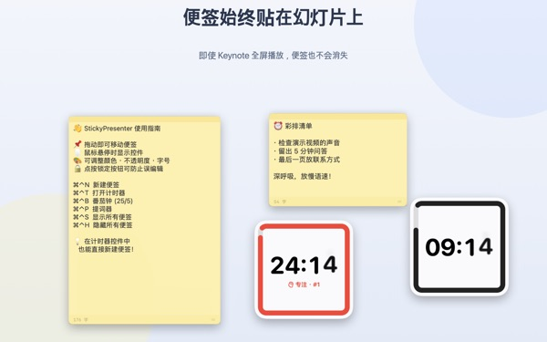
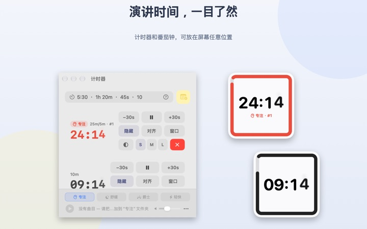
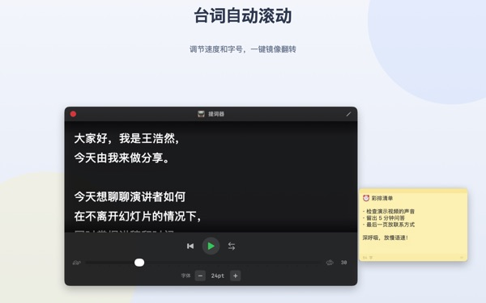
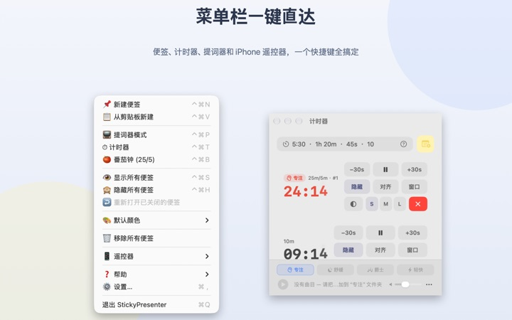

讲稿和剩余时间
就在幻灯片上
Keynote 切到全屏后，便签和计时器依然浮在上面。它们不会抢走演示 App 的焦点，翻页笔照常翻页。
所有功能免费。需要 macOS 14 或更高版本。

放到幻灯片上试试
用和 App 里一样的写法输入时间。点一下 15s，就能马上看到快结束时小组件怎样提醒你。
演讲时，讲稿和时间放在哪里？
演讲者备注要多占一块屏幕，低头看手表又会被台下注意到。贴在笔记本上的纸条，说不定也掉过。StickyPresenter 把讲稿和剩余时间直接贴在幻灯片上方，就在你视线所及之处。
瞄一眼就知道还剩多久
屏幕角落的方形小组件显示剩余时间。快结束时会变红，时间到了会响提示音并闪烁边框。
时间可以随手写成 5:30 或 1h 20m，写 25/5 就是专注与休息交替的番茄钟。把计时器单独开成窗口，屏幕共享或 AirPlay 时可以只投这一个窗口。

看着镜头读讲稿
提词器按你设定的速度滚动讲稿，到结尾自动停下。复制讲稿后按 ⌘⌃P，就会直接用这段文字打开。
还有供分光镜提词设备使用的左右镜像，速度和字号下次打开时依旧保留。

不用离开幻灯片
它安静地待在菜单栏里，没有程序坞图标，也没有要照看的窗口。⌘⌃N 新建便签、⌘⌃T 打开计时器等快捷键，在全屏演示时也能立即响应。
在台上，用免费的 iPhone App Remote Controller for Sticky 就能开始或暂停计时，还能把挡住幻灯片的小组件挪开。

三步开始
- 1
打开 App
菜单栏会出现便签图标，第一次打开时会显示使用指南。
- 2
放好便签和计时器
复制讲稿后按
⌘⌃V，再在计时栏里填上演讲时长。 - 3
幻灯片切到全屏
便签和计时器依然留在上方。
快捷键和时间写法
- ⌘⌃N
- 新建便签
- ⌘⌃V
- 用剪贴板内容新建便签
- ⌘⌃T
- 显示或隐藏计时器
- ⌘⌃B
- 开始番茄钟（专注 25 分钟，休息 5 分钟）
- ⌘⌃P
- 提词器
- ⌘⌃S · ⌘⌃H
- 显示或隐藏所有便签
- 10
- 只写数字表示分钟（10 分钟）
- 5:30 · 1:15:00
- 分:秒，时:分:秒
- 1h 20m · 45s
- 带单位
- 25/5
- 专注/休息，循环到你停止为止
所有快捷键都是同时按 Command（⌘）和 Control（⌃），在其他 App 里也能用。计时最长可设为 99:59:59。
常见问题
真的免费吗？
是的。所有功能免费，iPhone App Remote Controller for Sticky 也是另一款免费 App。如果觉得好用，可以在设置里给开发者打赏，打赏不会解锁任何功能。
屏幕共享或镜像时能只显示计时器吗？
可以。点计时器那一行的“窗口”按钮，把它开成普通窗口，它就会出现在屏幕共享和 AirPlay 的窗口列表里，可以只共享这个窗口。
隐藏了计时器小组件，找不到了。
在计时器窗口里把鼠标移到那一行上，小组件的位置会用虚线标出来。点“对齐”就能把它移回计时器窗口旁边。
不小心把便签关掉了。
在菜单栏选“重新打开已关闭的便签”，最多可以找回最近 20 张。便签随写随存，重新打开 App 后仍在原来的位置。
快捷键没反应。
使用指南的快捷键列表里标着“已被其他 App 占用”的，说明另一个 App 先用了它。退出那个 App 后就能恢复。不需要辅助功能权限。
变色龙主题为什么要屏幕录制权限？
变色龙会读取小组件背后屏幕的颜色来调整配色，所以需要这项权限。画面不会被保存或发送。不授权的话，跟随系统、浅色、深色主题照样可用。
背景音乐怎么添加？
在计时器窗口底部的音乐栏选一种氛围（专注、舒缓、爵士、轻快），App 会为每种氛围建好文件夹。把你自己的音乐放进去，就会随计时器依次播放。App 本身不带音乐。
iPhone 遥控器找不到 Mac。
请依次检查：Mac 上的 StickyPresenter 是否在运行（看菜单栏图标）；两台设备是否连在同一个 Wi‑Fi（访客网络和蜂窝数据不行）；iPhone 和 Mac 的“隐私与安全性”中是否都允许了“本地网络”；VPN 是否已关闭。
遥控器提示配对码不对。
请输入 Mac 菜单栏“遥控器”里当前显示的四位数配对码。如果点过“生成新配对码”，就只有新码有效。配对一次后，下次打开 App 就会自动连上。
别人会不会控制我的计时器？
不知道配对码就不行。Mac 只接受输入了正确配对码的遥控器，并且只在本地网络内通过加密直连通信。如果配对码被别人看到了，可以在菜单栏“遥控器”里选“生成新配对码”或“忘记已配对的遥控器”。
便签和讲稿存在哪里？
只存在这台 Mac 上。没有账号，也没有广告。除了匿名使用统计和你主动发送的反馈，不会有任何内容上传。
有疑问、遇到故障或想提建议，请发邮件到 mizzking75@gmail.com。